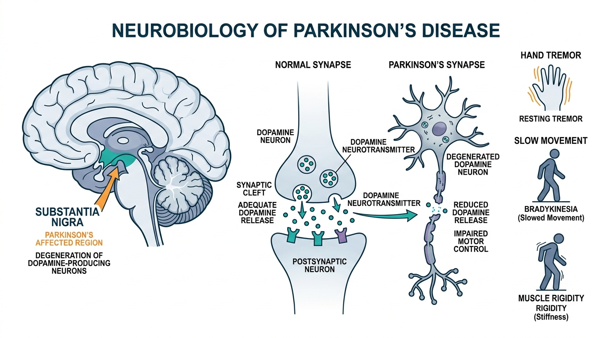

Quantum Machine Learning-Based Parkinson’s Disease Prediction
AI-assisted Parkinson’s disease severity prediction using classical, federated and quantum machine learning.
Understanding Parkinson’s Disease
Parkinson's disease is a neurodegenerative disorder affecting dopamine-producing neurons, progressively impacting motor and non-motor neurological functions.
Motor Symptoms
- Tremor: Involuntary rhythmic shaking, often presenting as a resting tremor in hands.
- Bradykinesia: Marked slowness of movement and progressive difficulty initiating voluntary motion.
- Rigidity: Muscle stiffness, resistance to movement, and painful cramping.
- Postural Instability: Impaired balance, gait freezing, and elevated fall risk.
Non-Motor Symptoms
- Sleep Problems: Insomnia, REM sleep behavior disorder, and daytime fatigue.
- Cognitive Changes: Memory impairment, executive dysfunction, and slowed processing.
- Pain & Sensory: Neuropathic discomfort, loss of smell (anosmia), and autonomic issues.
- Mental Health: Mood fluctuations, anxiety, and depressive symptoms.
Progression
Parkinson’s disease is progressive, and symptoms change over time. Early stages often feature subtle vocal pitch fluctuations and micro-tremors, advancing into pronounced motor control challenges requiring regular clinical monitoring.
Clinical Assessment
Clinical assessment is important for diagnosis and management. The Unified Parkinson's Disease Rating Scale (motor UPDRS) provides the benchmark for quantifying motor impairment. Remote telemonitoring helps track progression non-invasively.

Patient Telemonitoring Severity Prediction
Execute comparative inference across Classical, Federated, and Variational Quantum Neural Network models on standardized telemonitoring vocal biomarkers.
Three Learning Paradigms
Systematic comparative stratification across classical centralized learning, privacy-preserving federated networks, and variational quantum circuits.
Parkinson's Telemonitoring Dataset (5,875 Recordings)
│
┌───────────────────┼───────────────────┐
↓ ↓ ↓
Centralized ML Federated ML Quantum ML
(Pooled Ingestion) (26 Edge Clients) (QNN & VQC)
│ │ │
└───────────────────┼───────────────────┘
↓
Motor UPDRS Severity Stratification
Classical ML
Centralized data aggregation pooling development recordings. Evaluates non-linear baselines on the locked test cohort.
Federated Learning
Privacy-aware distributed learning. 26 client nodes corresponding to development subjects train local decision trees without sharing raw patient voice data.
Quantum ML
Angle-encodes 12 ANOVA features onto 4 qubits in a 16-dimensional complex Hilbert space with an entangling CNOT ring topology and Pauli-Z observable measurement.
Research Highlights
Core quantitative findings from the locked test set evaluation (9 unseen test subjects, 1,290 recordings).
Centralized Random Forest
Upper-bound baseline on locked test setFederated Random Forest
Privacy-preserving 26-client FedAvgTrue QNN (Phase 24)
4-Qubit PennyLane State-Vector SimulatorHybrid VQC (Phase 21)
Quantum circuit with classical residual skipMethodology Pipeline
Systematic data-processing and model-execution pathway preserving subject-level zero leakage.
Dataset Ingestion
5,875 sustained vowel /a/ telemonitoring voice signals across 42 subjects.
Preprocessing & Standardization
StandardScaler fitted strictly on the 26 development subjects to eliminate data snooping.
ANOVA Feature Selection
F-statistic ranking isolates statistically significant frequency perturbation and entropy metrics.
12 Selected Biomarkers
motor_UPDRS, 5 Jitter measurements, HNR, RPDE, DFA, PPE, age, and sex.
ML / FL / QML Training
Comparative training across classical pooled baselines, federated edge clients, and 4-qubit quantum circuits.
Locked Test Set Evaluation
Final performance benchmark evaluated on 1,290 recordings from 9 unseen patients.
Prediction & Stratification
Severity classification: Class 0 (Mild) vs. Class 1 (Moderate-to-Severe motor impairment).
4-Qubit Variational Quantum Circuit Architecture
PennyLanedefault.qubit state-vector simulation with PyTorch backpropagation
About the Project
This research evaluates centralized machine learning, federated learning, and quantum machine learning approaches for Parkinson's disease severity classification using subject-wise data separation and a locked test set.
Oxford cohort containing 5,875 recordings across 42 subjects collected over 6 months under remote telemonitoring protocol.
One-way Analysis of Variance isolates 12 acoustic frequency perturbation and entropy parameters separating severity classes.
Comparative framework benchmarking Centralized Baselines, Federated Averaging across 26 edge clients, and 4-Qubit PennyLane VQC models.
Strict zero subject leakage: 9 subjects (1,290 recordings) kept unseen during development and feature selection.
Research & Resources
Official medical guidelines, clinical data standards, and open research repositories.
World Health Organization global health overview detailing symptoms, progression, treatment, and rehabilitation.
National Institute of Neurological Disorders and Stroke standards for clinical Parkinson's data.
Access the 5,875 recordings collected by Oxford University and University of Colorado.